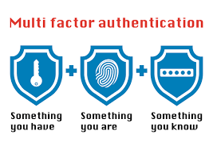

Protecting people against online theives and hackers
Technology is a big part of our world today in this century and technology has come very far with lots of improvement and design. Technology is very important and significant as well as needful which makes life easier for humans. It advances every single time and also comes with loop holes. Bad people and hackers may get to learn the loop hole of that technology and may want to use this advantage to break into people's privacy and temper with their private activities. With this real-world problem at hand, this site is intended to tell the world about this company's ability to solve this problem.
We are working closely with tech giants such as google, apps like Facebook, WhatsApp, Twitter and Instagram. To protect individuals from theft, our company has created a face verification method that verifies the person's face before using the apps listed above. The apps will now be able to scan the user's face before it proceeds to open. If the app recognizes the user's face, the app opens; if not the app doesn't open and it sends notification to the original user about attempted entries from a different person. This face verification doesn't only apply to social media apps. It applies to online storage such as iCloud on apple devices and google emails. You have to use face verification to access those stuffs now.
Another way of protecting people from hackers and thieves is the company has created a three-step verification process. The user will be required to enter a three-step information for the device to know that it's dealing with the actual user and no one else. These three step verifications may be simple questions the user has to input for the device to recognize him or her. These questions may be as simple as the user's favorite soccer team, the name of the user's pet or a particular favorite pet and finally the user's best day. If all these inputs match with then the user can have access to his or her private documents or files and if those inputs doesn't match those private files will not be opened to the one attempting. This is one way to protect users from online thieves and hackers as well as scammers.